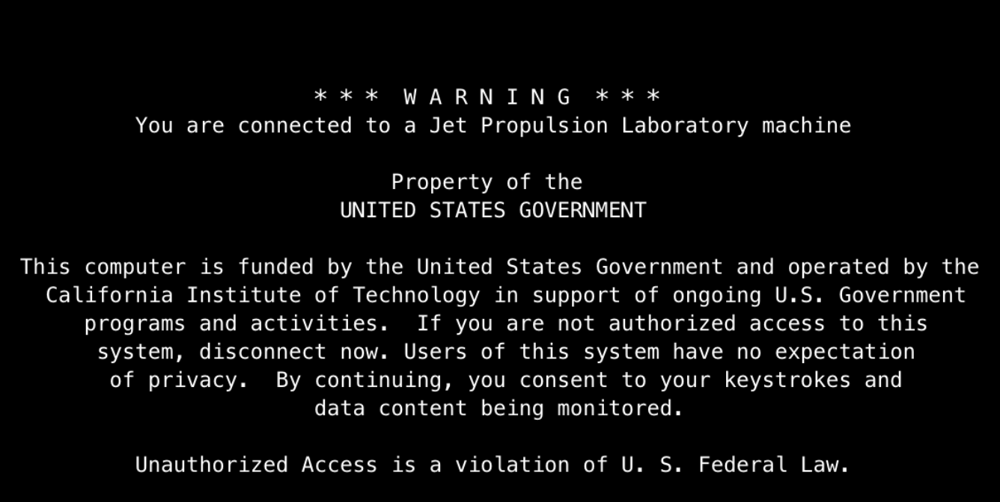

Telecom relay operations at JPL: The briefing
Introduce MER team

describe old system
It was a huge mess."Currently our method of evaluating our heading choices
is to open all of the plots on different computers or windows
and to examine each one, moving them around the
screen to compare next to each other. Sometimes we will
even print out some of the plots and hold layered paper
up to the light to compare them together."
- NASA spacecraft systems engineer
About Opportunity
Two rovers landed on Mars in 2004: Mars Exploration Rover A ("Spirit") and
Mars Exploration Rover B ("Opportunity"). MER-A got stuck in sand back in YEAR,
so MER-B — or simply MER now, since there is no need to distinguish them — is flying solo.
Over 98% of Opportunity's collected data is returned to Earth via relay with one of the Mars orbiters. Instruments onboard include cameras, a spectrometer, and a microscopic imager. The science team makes decisions about where they want to drive, and then the engineers plot the optimal rover path.
However, the rover has some limitations since it wasn't intended to support long-term operations. Because of a hard drive failure, the rover's memory is wiped every night. Because of this, data must be transferred every day or it's lost.
Contextual inquiry: Tactical planning
Day in the life of an SSE; show diagrams